En este tema echaremos un vistazo al generador de personajes, y crearemos nuestros propios personajes para exportarlos y usarlos en nuestro juego, teniendo siempre en cuenta la coherencia con nuestra historia.
Es hora de comenzar a poblar nuestro mundo.
Una cosa que todo videojuego necesita es un personaje que el jugador pueda controlar. Incluso el juego más
sencillo necesita que el jugador llegue a controlar un personaje.
Hasta ahora hemos estado controlando un grupo formado por los personajes predeterminados de RMMV. Es hora
de conocer un poco mejor a Harold.
Nos dirigimos a la Base de datos (presionando F9 o buscándola en el elemento Herramientas de la barra de herramientas del menú) y abra la pestaña Actores.
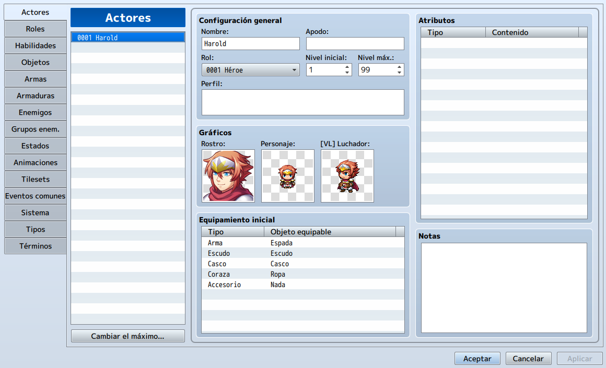
Explicaremos en detalle cada zona de esta parte de la base de datos.
En RMMV, los personajes del jugador (aquellos que el jugador puede mezclar y combinar en su grupo) se llaman
actores.
Nuestro juego viene con cuatro actores prefabricados por defecto, aunque para empezar lo que hemos haecho ha
sido dejar solo a Harold. Podemos cambiar el número máximo de personajes y agregar algunos más creados por
nosotros mismos. También se pueden editar o borrar los actores predefinidos.
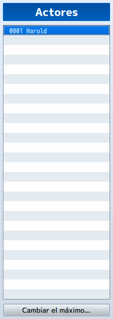
• Configuración general: Cubre la información básica de un actor y en gran medida se explican por sí mismos.
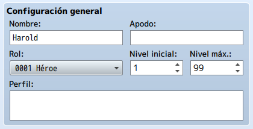
- Es de destacar Rol, que se discutirá cuando lleguemos a la pestaña
correspondiente de la Base de datos.
- Perfil es el resumen biográfico de un personaje. “Busca en la tierra al
elegido” es un ejemplo de tal resumen.
- Puedes modificar el Nivel inicial de un actor, que determinará en qué nivel
se une al grupo cuando se coloca en el juego.
- También puedes cambiar el Nivel máximo de un actor, limitando su crecimiento,
si tienes una razón para hacerlo. Es común limitar el nivel máximo de un personaje cuando tienes
un miembro temporal del grupo. Puedes establecer su nivel inicial igual a su máximo, y él/ella
permanecerá en el mismo nivel mientras dure su pertenencia al grupo.
• Gráficos: Hay un conjunto de tres imágenes.
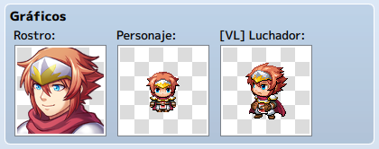
- El de la izquierda es el retrato del personaje
- El del medio es su conjunto de sprites, que cubre tanto la apariencia como los patrones de
movimiento.
- El gráfico de la derecha es el llamado [VL] Luchador. VL es la abreviatura de Vista Lateral,
un tipo de batalla con el que estarás familiarizado si has jugado antes al Final Fantasy. Lo
usaremos para las batallas de nuestro juego.
• Equipamiento inicial: Determina con qué elementos comienza un actor determinado.
Un personaje generalmente debe comenzar con algún tipo de equipo, aunque hay ocasiones en las que no
sería apropiado (como cuando un protagonista comienza el juego como prisionero; él o ella puede tener
la ropa puesta y nada más).
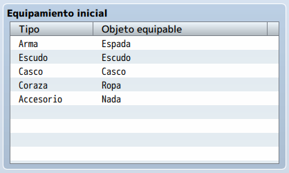
• Atributos: Son algo importante en RMMV. Verás rápidamente que los cuatro actores tienen cada uno una lista de rasgos en blanco, y eso se debe a que los personajes predeterminados tienen todos sus rasgos contenidos en sus clases y no en ellos mismos. La forma en que RMMV gestiona esto de forma predeterminada está bien, aunque hay casos específicos en los que sería mejor tener algunos rasgos diferenciadores a nivel de actor. Si tienes dos personajes de la misma clase y no son gemelos idénticos, puedes diferenciar algunas de sus estadísticas mediante el uso de Rasgos en el nivel de Actor. Por ejemplo, podrías darle a uno de los personajes HP * 80% y al otro MP * 110%.
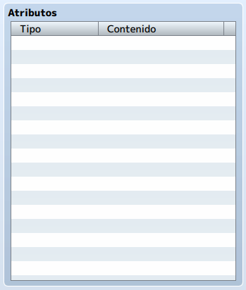
• Nota: Es solo una especie de bloc de notas. Si necesitas tomar notas sobre un determinado personaje, puedes escribirlas aquí. La mayoría de las partes de RMMV tienen una sección de notas.
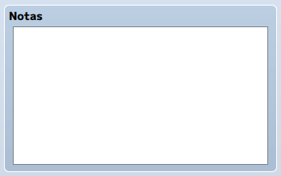
Los cuatro actores tienen cada uno su propio Rol. El Rol de Harold es Héroe (lo que quizás explica por qué era el líder del grupo por defecto). Échale un vistazo a cada una de los roles y observa cómo difieren sus rasgos y habilidades (no verás ninguna diferencia en sus curvas de parámetros).
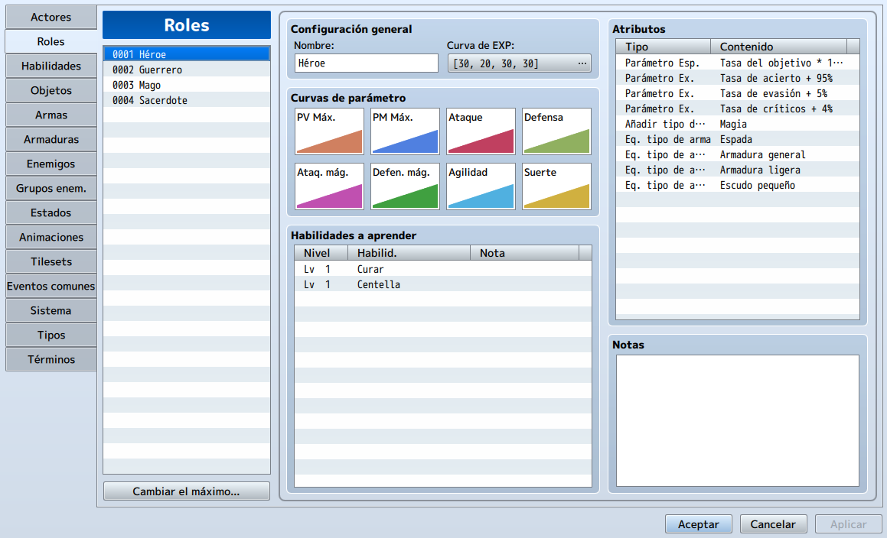
RMMV prefiere colocar los rasgos que definen al personaje dentro de la pestaña Roles, ya que el rol de un
actor lo define altamente.
• Configuración general
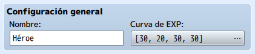
- Curva de EXP: EXP es la abreviatura de "Experiencia". Si hace clic en el botón
donde se encuentran los números entre corchetes, verás con qué se relacionan esos cuatro valores
y cómo podemos usarlos para modificar la tasa de avance. Puedes hacer que los niveles sean más
fáciles o más difíciles de obtener mediante el uso de esta propiedad.
De forma predeterminada, las cuatro clases predefinidas tienen la misma curva de experiencia.
Si quieres que los actores suban de nivel según su clase, puedes modificar sus curvas aquí.
Para tomar un ejemplo, Dragones y Mazmorras, tenía un sistema de experiencia en el que las clases
subían de nivel a un ritmo proporcional a su poder. Así que los lanzadores de hechizos, que
posiblemente tenían más poder, tardaron más tiempo en ganar un solo nivel que las clases "más
débiles", como Ladrón, que subieron de nivel más rápido para compensar su nivel de poder general
más bajo.
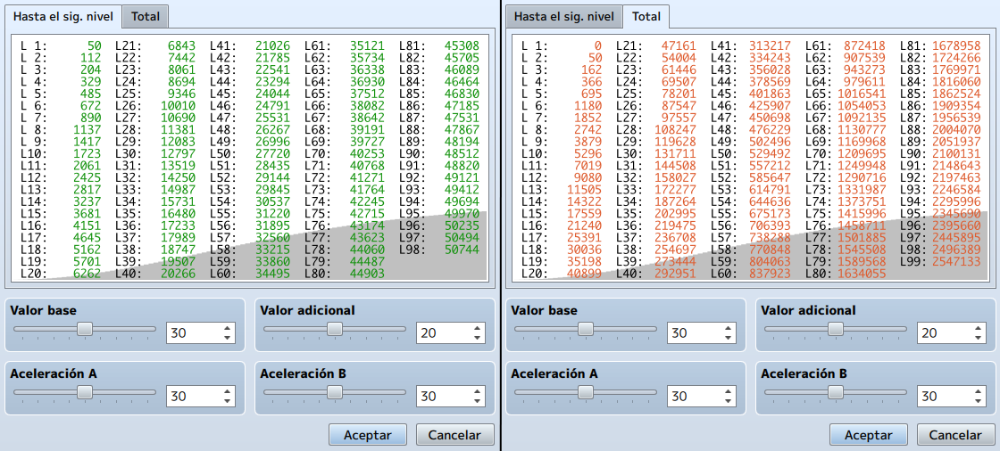
• Curvas de parámetro: Estos afectan la velocidad a la que una clase determinada obtiene sus estadísticas.
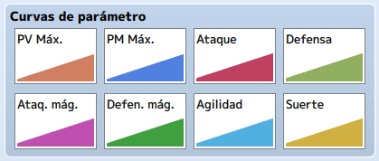
Puede editar un parámetro haciendo doble click en él, lo que mostrará un gráfico. Hay ocho estadísticas en RMMV.
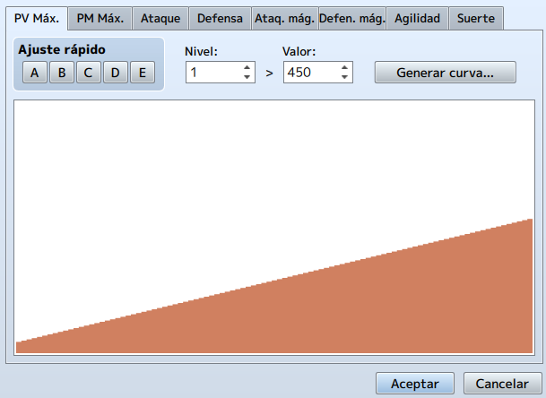
- PV Máx.: Puntos máximos de vida. Si estos caen a 0, el personaje está muerto
y requiere alguna forma de reactivación.
- PM Máx.: Puntos máximos de magia. Se utiliza para lanzar todo tipo de hechizos
mágicos.
- Ataque: Influye en la cantidad de daño que hace un personaje con el arma que
elija.
- Defensa: Influye en la cantidad de daño que sufre un personaje por los ataques
enemigos. La fórmula de daño predeterminada para el comando de ataque básico es
[ATK * 4 - DEF * 2]. Esencialmente, la fórmula básica favorece el impulso de su ataque sobre su
defensa.
- Ataq. mág.: Ataque de mágico. Se puede utilizar en fórmulas de hechizos para
determinar el daño.
- Defen. mág: Defensa mágica. Se puede utilizar en fórmulas de hechizos para
determinar la mitigación de daños.
- Agilidad: Cuanto mayor sea la Agilidad de un personaje, antes actuará en un
turno de batalla determinado.
- Suerte: Al igual que en muchos otros juegos que tienen esa estadística, Suerte
en RMMV es la estadística comodín. La información sobre herramientas de Suerte en RMMV establece
que Suerte "afecta cosas como la posibilidad de que ocurran problemas de estado".
• Habilidades a aprender: Estos son uno de los aspectos más intrínsecos de un
personaje de RPG. Si un personaje no tuviera ninguna habilidad, solo podría atacar con su arma, y eso
probablemente se volvería aburrido después de un tiempo.
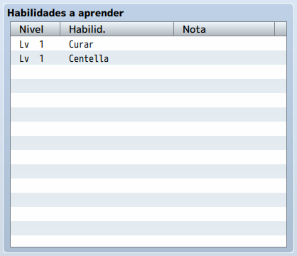
Algunos ejemplos de habilidades incluyen hechizos curativos y ataques de poder. Harold comienza con un
hechizo de curación y un hechizo que hace daño de Trueno. No aprende ninguna habilidad nueva durante
el transcurso del juego.
• Atributos: Estos definen muchos aspectos diversos, pero importantes, de un rol.
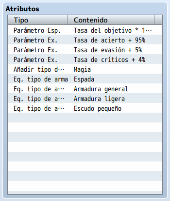
Analicemos el rol de héroe, rasgo por rasgo:
- Tasa del objetivo: Marca la velocidad a la que un miembro de este rol es el
objetivo de enemigos. La tasa predeterminada es 100% y se puede aumentar o disminuir según se
desee. Un guerrero particularmente grande podría justificar una tasa objetivo más alta, mientras
que un ladrón más pequeño probablemente justificaría una tasa objetivo más baja.
Supongamos que tiene un grupo de tres: un guerrero grande con una tasa objetivo del 200%, un
guardia de tamaño normal con una tasa objetivo del 100% y un pequeño ladrón con una tasa objetivo
del 50%. Es cuatro veces más probable que el guerrero sea atacado que el ladrón. Es la mitad de
probable que el ladrón sea atacado que el guardia.
- Tasa de acierto: Es lo que se conoce más genéricamente en los juegos de rol
como exactitud. En RMMV, la precisión total de un personaje es igual a su Tasa de aciertos más
cualquier Tasa de aciertos adicional que obtenga de su equipo. La capacidad de un personaje para
lanzar sus ataques y habilidades se modifica negativamente por cualquier Evasión que tenga el
enemigo. La funcionalidad estándar de RMMV está configurada para que el juego calcule primero
para ver si un actor aterriza su ataque y, si es así, verifica si el enemigo esquiva el ataque.
- Tasa de críticos: Es la posibilidad que tiene un personaje de asestar un golpe
crítico por el triple del daño normal. La probabilidad de un actor de conseguir un golpe crítico
se reduce según la tasa de evasión crítica del enemigo.
- Añadir tipo de habilidad: Es un rasgo que permite a un rol elegido utilizar
una categoría de habilidades. En este caso, los héroes pueden usar habilidades de tipo mágico.
Por defecto, RMMV tiene dos tipos de habilidades: especial y mágica. Un rol requiere acceso a un
tipo de habilidad para poder usar habilidades de ese tipo.
- Equipar Arma y armadura: Ambos se explican por sí mismos. Definen qué tipo de
armas y armaduras puede usar un rol determinado. Si no asigna ningún rasgo de equipamiento a un
rol, no podrá equipar nada (lo cual podría ser bueno para un tipo de personaje de jugador
completamente inusual, como un lobo o un yeti).
Pasemos a la pestaña Habilidades, que tiene mucha información.
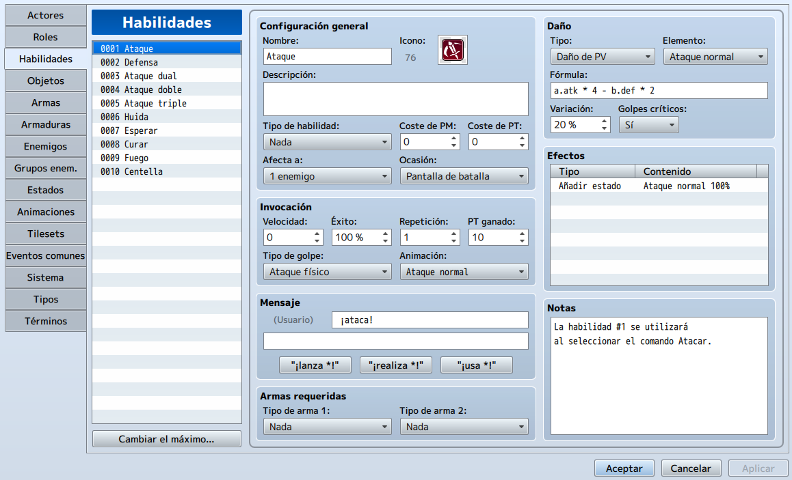
Estamos viendo la primera habilidad en la lista de 10 proporcionadas por defecto dentro de RMMV.
Las habilidades 1 y 2 son internamente importantes para RMMV, así que tened cuidado de no editarlas, a menos
que esteis seguro de los cambios.
La primera habilidad en RMMV es el ataque básico:
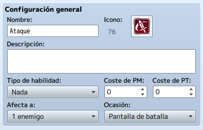
• Configuración general: Proporciona valores básicos, aunque esenciales, que se deben
modificar.
- Tipo de habilidad: Indica qué tipo de categoría de habilidad debe desbloquearse
para que un jugador use esa habilidad. Como Ataque es un ataque básico genérico, cualquiera puede
usarlo. Del mismo modo, no tiene coste de PM o PT (Puntos de técnica). Un personaje gana PT por
recibir daño y usar habilidades, incluido Ataque.
- Afecta a: Define lo que se ve afectado por la habilidad. El ataque básico
golpea a un solo enemigo objetivo.
- Ocasión: Alterna cuando se puede usar una habilidad.
◦ Siempre: La habilidad se puede usar dentro y fuera de la batalla.
◦ Pantalla de batalla: La habilidad solo se puede usar en batalla.
◦ Pantalla de menú: Este es el menú de personajes al que accedimos en el
capítulo 1.
◦ Nunca: Parece inútil, pero en realidad es útil para una habilidad que
solo desea que se use en circunstancias muy específicas. Probablemente querrás crear un
evento para activar la habilidad, en ese caso.
• Daño: Además de tener un nombre ligeramente engañoso, ya que también puedes usar la
fórmula para hechizos de curación, esto tiene algunas complejidades propias:
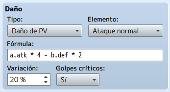
- Tipo: El tipo de efecto que desea que tenga esta habilidad. Además, tiene
Recuperación de PV y PM como dos de las siete opciones posibles. El tipio Nada puede ser útil
para habilidades que causan efectos de estado pero no causan ningún daño real al causarlos.
- Elemento: Determina la tipificación elemental de la habilidad. El Ataque
normal es su propio elemento especial, está codificado de esa manera para que el Ataque pueda
beneficiarse de las propiedades elementales del arma de un personaje, por poner un ejemplo.
- Fórmula: Esa pequeña caja que ves tiene un potencial casi infinito. Más
adelante veremos algunos de los que usaremos en nuestro juego. Por ahora, debes saber que el
"usuario" de una habilidad se expresa mediante un a.atk en el caso de Ataque y
el "objetivo" de una habilidad se expresa mediante b.def, para esta habilidad.
Si dejas el cursor sobre el cuadro de fórmula durante unos segundos, aparecerá una sugerencia de
herramienta muy útil.
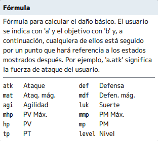
- Variación: Determina el rango de valores que devuelve una habilidad. El ataque
tiene una variación del 20%. Para dar un ejemplo, un personaje capaz de hacer 100 de daño con
Ataque en realidad haría entre 80 y 120. Es preferible que la variación de mi habilidad sea baja,
pero también es preferible que los personajes tengan estadísticas bajas en lugar de estadísticas
altas que vienen con los caracteres predeterminados en RMMV.
- Golpes críticos: Determina si una habilidad puede dar un golpe crítico o no.
• Efectos: Estos son para las habilidades lo que los Atributos son para los actores.
Cuando se usa, Ataque tiene un efecto especial para agregar un estado llamado Ataque Normal. No
deberíamos de alterarlo. Sin embargo, puedes agregar otros efectos al ataque básico si tienes
curiosidad.
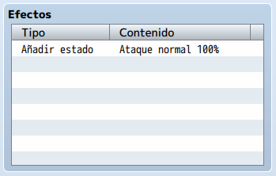
• Invocación: Esto afecta el uso de la habilidad en sí:
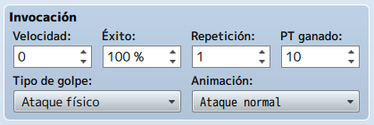
- Velocidad: Esto ajusta la agilidad del usuario hacia arriba o hacia abajo al
usar la habilidad. La velocidad puede ser un valor negativo. Puedes crear una habilidad que esté
garantizada para golpear primero, dándole una velocidad alta. También puedes realizar una
habilidad que haga que su usuario actúe en último lugar, otorgándole una Velocidad muy negativa.
- Éxito: La posibilidad de que la habilidad se conecte realmente. Tiendo que
usar una tasa de éxito que no sea del 100% para habilidades que causan efectos de estado
desagradables, como muerte instantánea o petrificación.
- Repetición: Cuántas veces se activa la habilidad cuando se usa una vez. La
mayoría de las habilidades solo deberían activarse una vez, pero las habilidades de golpes
múltiples funcionan con precisión repitiéndose.
- PT ganado: La cantidad de PT que gana un personaje por el uso de la habilidad
se rige por este valor aquí. Por lo tanto, podrías crear fácilmente una habilidad con el único
propósito de aumentar el PT de tu personaje a 100 (el límite de PT es de 100, a diferencia de MP,
que puede llegar hasta 9999). Asimismo, puedes crear una habilidad que no otorgue PT a su usuario.
- Tipo de golpe: Hay tres tipos de golpes posibles para cualquier habilidad
determinada:
◦ Golpe certero: Una habilidad con este tipo de impacto ignora la
precisión del usuario y las estadísticas de evasión del objetivo. El único determinante de
si una habilidad de Golpe certero funcionará es su % de éxito.
◦ Ataque físico: Una habilidad con este tipo de impacto se conecta según
la tasa de aciertos del usuario y se ve afectada por la tasa de evasión del objetivo, así
como por su propio % de éxito.
◦ Ataque mágico: Una habilidad con este tipo de impacto se conecta según
la tasa de evasión mágica del objetivo y el % de éxito de la habilidad.
- Animación: Qué se muestra cuando usas la habilidad en la batalla.
• Mensaje: Esto se explica por sí mismo. Lo único que hay que señalar es que necesita
un espacio antes de su mensaje de habilidad.
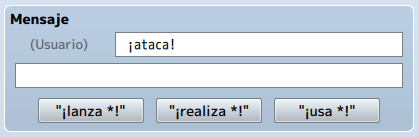
- Debajo del mensaje, hay tres botones: "¡lanza *!",
"realiza *!" y "usa *!". Hacer click en uno de esos botones
reemplaza el texto en el Mensaje de texto con texto predeterminado.
• Armas requeridas: Puedes ajustarlo para que cierta habilidad requiera un cierto tipo
de arma (como la habilidad de lluvia de flechas que requiere un arco o ballesta). Puede ser estricto y
dejarlo en un tipo de arma o relajar un poco la restricción y agregar un segundo tipo de arma. Un golpe
poderoso de tu arma es una habilidad que se puede hacer tanto con una espada como con un hacha, por
ejemplo.
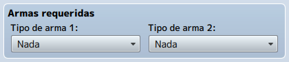
Esta pestaña tiene muchas similitudes con la pestaña Habilidades. Internamente, las habilidades también se consideran elementos, por lo que este es simplemente un caso de la funcionalidad estándar que coincide con el código. Por lo tanto, solo hay una o dos cosas nuevas para mencionar:
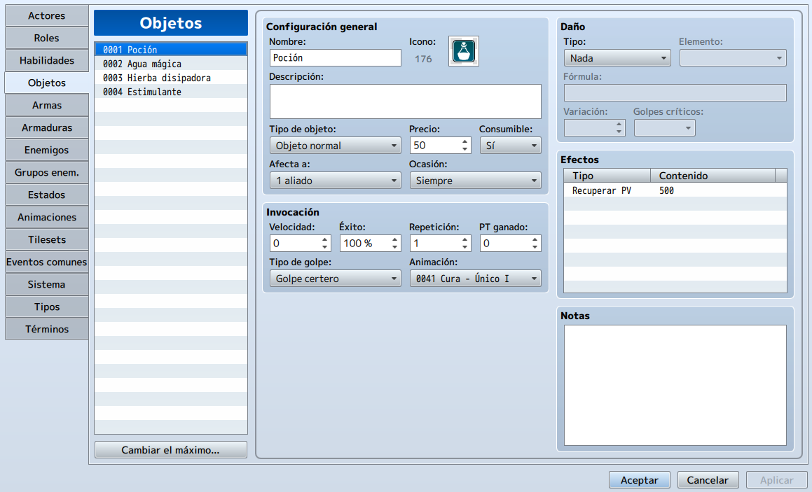
• Configuración general:
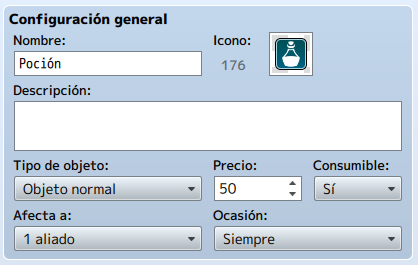
- Tipo de objeto: Estos se subdividen en:
◦ Objeto normal: Casi todos los tipos de objetos que se te ocurran. Una
poción, comida y una bomba de humo son tres ejemplos de Objetos normales.
◦ Objeto clave: Los elementos clave son cosas importantes que el jugador
adquiere y de las que nunca debe deshacerse, o que debe usar para un propósito específico.
Una llave antigua o una misiva real son buenos ejemplos de Objetos clave.
◦ Objeto oculto A y B: Solo son visibles durante los eventos que implican
la selección de elementos. Son buenos para objetos de tipo simbólico ,como coleccionables
y llaves, que no necesariamente quieres que el jugador vea en su inventario por ningún
motivo.
- Precio: Los objetos, armas y armaduras pueden tener un precio fijo en la
moneda del juego. Los objetos con un valor de 0 no se pueden vender, pero puedes tener un objeto
que cuesta 0 a la venta en una tienda, aunque no se recomienda. Los objetos se venden por la
mitad de su valor.
Nota: Con muy pocas excepciones, debe establecer el precio de sus objetos clave en 0, para que no se puedan vender. Podríamos pensar que los objetos clave tienen protección contra la venta, pero ese no es el caso en RMMV.
• Efectos: Al igual que en el caso de las habilidades, sus elementos pueden tener una variedad de efectos. Si lo prefieres, incluso puedes usar la fórmula de daño para elementos curativos o elementos de daño consumibles (piense en bombas y estrellas arrojadizas).
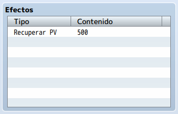
De estas pestañas también hay poco nuevo que decir. Las dós son básibamente iguales.
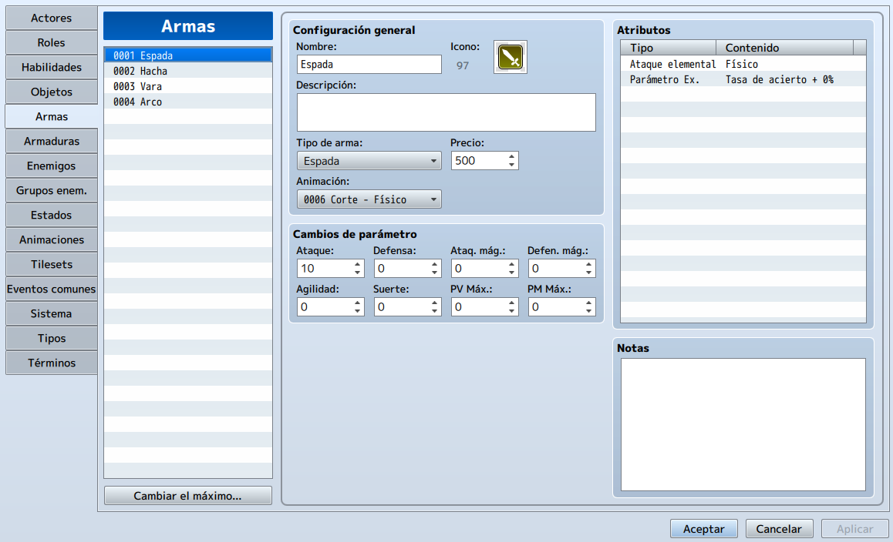
Así como los objetos tienen dos tipos diferentes, también puedes definir tu tipo de arma (y armadura, para el
caso).
El menú desplegable Tipo de arma (y Tipo de armadura) se completarán con los tipos enumerados en la pestaña
Tipos para esas categorí. Lo que hace que las armas y armaduras sean diferentes de los elementos es su
capacidad para ser equipados por actores elegibles.
Como equipo, otorgan cambios de parámetros (generalmente bonificaciones, pero podría tener elementos malditos
que también reducen las estadísticas) y tienen características que se suman a sus propiedades.
En el caso de las armas, también debes definir su elemento de ataque. La mayoría de las armas causan daño
físico, pero una hoja en llamas causaría daño por fuego, mientras que un arco de hielo podría infligir frío
extremo o daño por agua.
Con las armaduras, también podemos definir su elemento de defensa.
Nota: A diferencia de otros sistemas de juegos de rol, RMMV no da a las armas un rango de daño inherente. Lo que ves en los cambios de parámetros de un arma es lo que obtienes.
Cambia a Harold para que pueda usar tanto arcos como espadas.
Aumenta la pestaña de Habilidades como máximo a 40 y crea una habilidad en el espacio 11 que requiera el uso de un arco.
Dale a Harold la habilidad que has creado.
Aumenta la pestaña de Objetos como máximo a 40. Crea un objeto normal que se pueda usar para atacar enemigos y se consuma con el uso y un objeto clave.
Aumente la pestaña de Armas como máximo a 40 y crea un arco para que lo use Harold.